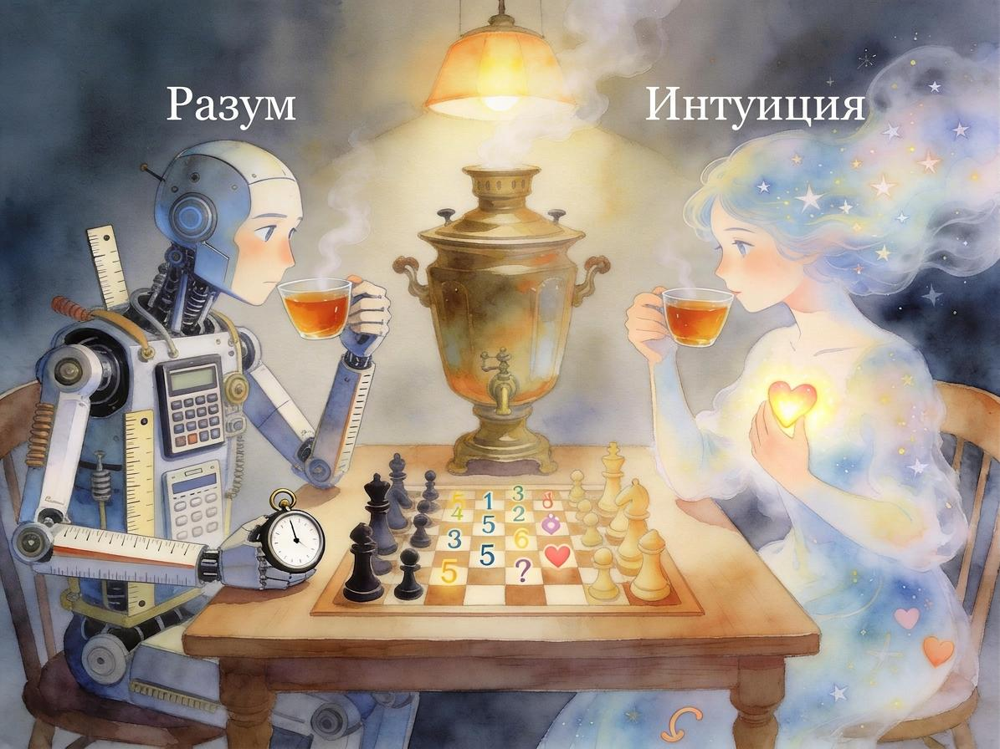
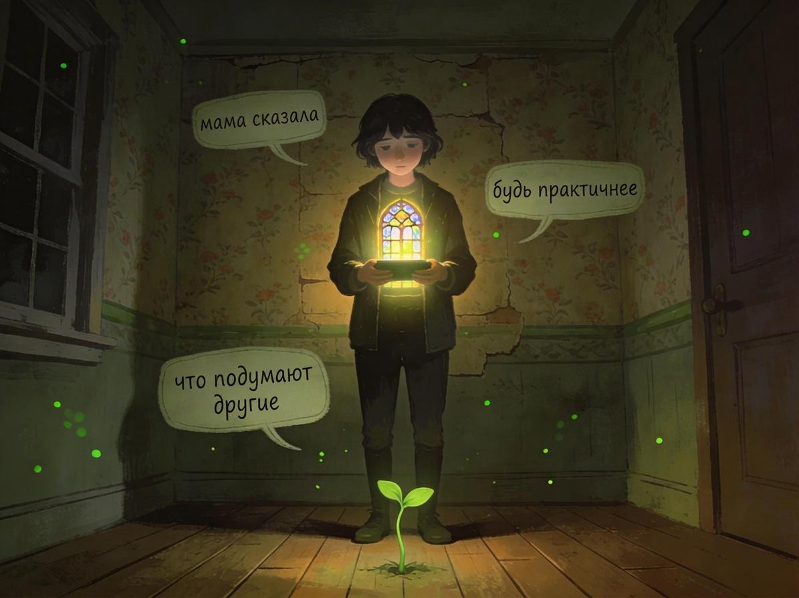
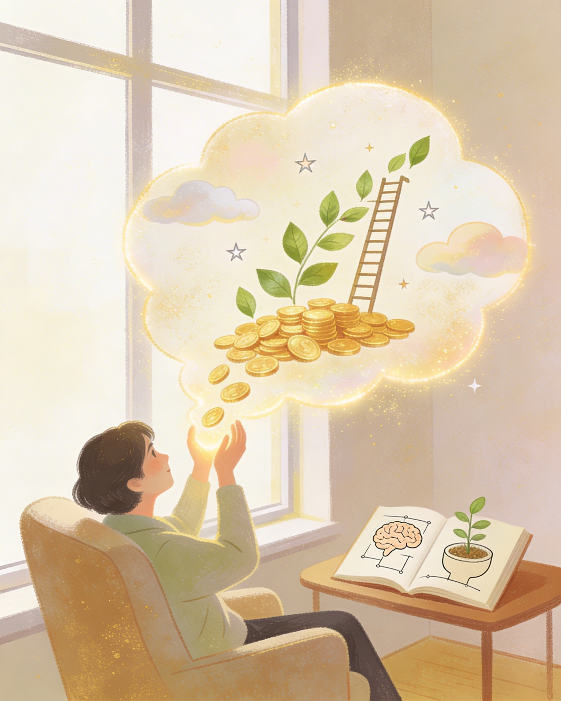
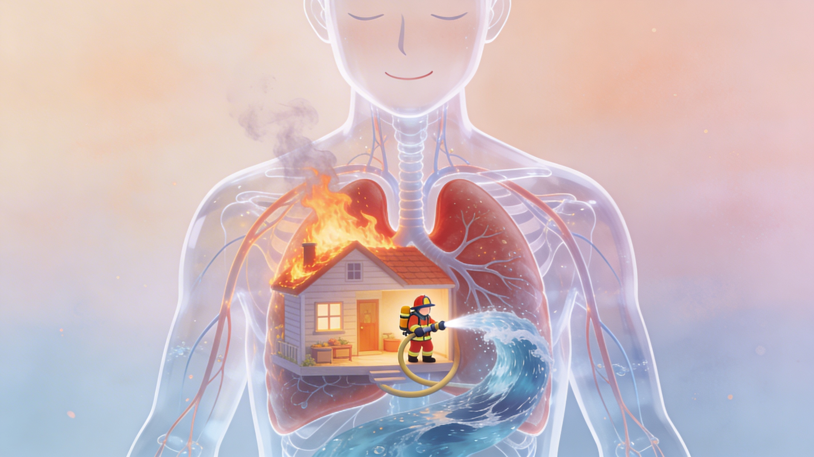

Разум и интуиция: дуэт, который мог бы править миром
Где силён анализ, где нужен внутренний шёпот и как не превратиться в «огромный мозг и глухую душу».
Читать далееБлог
Тексты о психологии, страхах и том, как вернуть себе спокойствие и опору — без лишнего шума и «ковыряния ран».

Где силён анализ, где нужен внутренний шёпот и как не превратиться в «огромный мозг и глухую душу».
Читать далее
Предназначение не ищут — его освобождают от завалов «надо» и чужих ожиданий. В конце — короткий тест.
Читать далее
Решайте проблемы только когда они реально пришли — техника безопасности для психики и энергии.
Читать далееДым — неизбежен. Проблема не в нём, а в закрытом «дымоходе»: как проживать чувства экологично.
Читать далее
Идеи Уоллеса Уоттлза: мышление, действие, созидание вместо конкуренции и путь к величию без магии.
Читать далее
О природе страха, защитных реакциях и о том, как мягко вернуть себе чувство безопасности.
Читать далее
Как тревога и установки влияют на решения о деньгах и самооценку.
Читать далее
Паника как сигнал нервной системы и как относиться к ней бережнее.
Читать далее

Агрессия как сигнал, а не враг: подавление, выплеск, телу выход и здоровые границы.
Читать далее